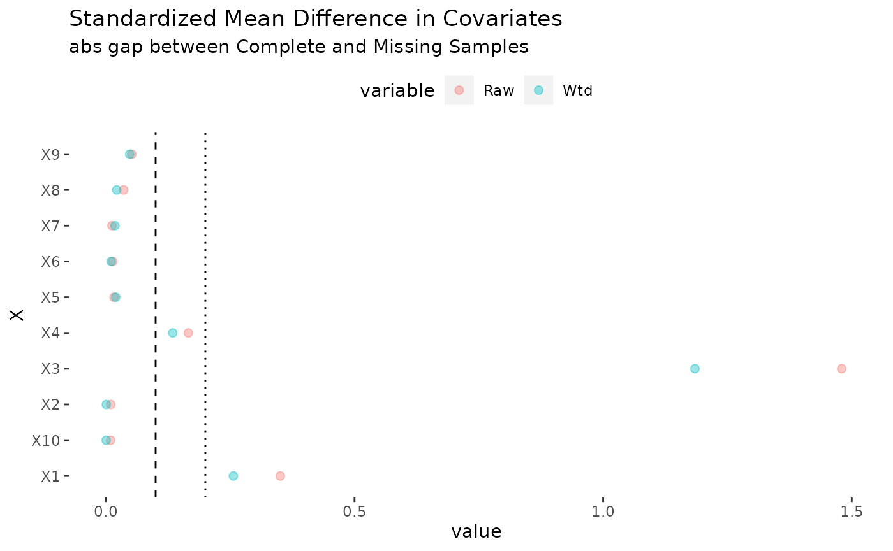

Effect Generalization
Apoorva Lal
2022-10-23
generalization.Rmd\(\DeclareMathOperator*{\argmin}{argmin}\) \(\newcommand{\abs}[1]{\left\vert {#1} \right\vert}\) \(\newcommand{\indep}{\perp\!\!\!\perp}\) \(\newcommand{\var}{\mathrm{Var}}\) \(\newcommand{\ephi}{\varephilon}\) \(\newcommand{\phii}{\varphi}\) \(\newcommand{\tra}{^{\top}}\) \(\newcommand{\sumin}{\sum_{i=1}^n}\) \(\newcommand{\sumiN}{\sum_{i=1}^n}\) \(\newcommand{\norm}[1]{\left\Vert{#1} \right\Vert}\) \(\newcommand\Bigpar[1]{\left( #1 \right )}\) \(\newcommand\Bigbr[1]{\left[ #1 \right ]}\) \(\newcommand\Bigcr[1]{\left\{ #1 \right \}}\) \(\newcommand\SetB[1]{\left\{ #1 \right\}}\) \(\newcommand\Sett[1]{\mathcal{#1}}\) \(\newcommand{\Data}{\mathcal{D}}\) \(\newcommand{\Ubr}[2]{\underbrace{#1}_{\text{#2}}}\) \(\newcommand{\Obr}[2]{ \overbrace{#1}^{\text{#2}}}\) \(\newcommand{\sumiN}{\sum_{i=1}^N}\) \(\newcommand{\dydx}[2]{\frac{\partial #1}{\partial #2}}\) \(\newcommand\Indic[1]{\mathbb{1}_{#1}}\) \(\newcommand{\Realm}[1]{\mathbb{R}^{#1}}\) \(\newcommand{\Exp}[1]{\mathbb{E}\left[#1\right]}\) \(\newcommand{\Expt}[2]{\mathbb{E}_{#1}\left[#2\right]}\) \(\newcommand{\Var}[1]{\mathbb{V}\left[#1\right]}\) \(\newcommand{\Covar}[1]{\text{Cov}\left[#1\right]}\) \(\newcommand{\Prob}[1]{\mathbf{Pr}\left(#1\right)}\) \(\newcommand{\Supp}[1]{\text{Supp}\left[#1\right]}\) \(\newcommand{\doyx}{\Prob{Y \, |\,\mathsf{do} (X = x)}}\) \(\newcommand{\doo}[1]{\Prob{Y |\,\mathsf{do} (#1) }}\) \(\newcommand{\R}{\mathbb{R}}\) \(\newcommand{\Z}{\mathbb{Z}}\) \(\newcommand{\wh}[1]{\widehat{#1}}\) \(\newcommand{\wt}[1]{\widetilde{#1}}\) \(\newcommand{\wb}[1]{\overline{#1}}\) \(\newcommand\Ol[1]{\overline{#1}}\) \(\newcommand\Ul[1]{\underline{#1}}\) \(\newcommand\Str[1]{#1^{*}}\) \(\newcommand{\F}{\mathsf{F}}\) \(\newcommand{\ff}{\mathsf{f}}\) \(\newcommand{\Cdf}[1]{\mathbb{F}\left(#1\right)}\) \(\newcommand{\Cdff}[2]{\mathbb{F}_{#1}\left(#2\right)}\) \(\newcommand{\Pdf}[1]{\mathsf{f}\left(#1\right)}\) \(\newcommand{\Pdff}[2]{\mathsf{f}_{#1}\left(#2\right)}\) \(\newcommand{\dd}{\mathsf{d}}\) \(\newcommand\Normal[1]{\mathcal{N} \left( #1 \right )}\) \(\newcommand\Unif[1]{\mathsf{U} \left[ #1 \right ]}\) \(\newcommand\Bern[1]{\mathsf{Bernoulli} \left( #1 \right )}\) \(\newcommand\Binom[1]{\mathsf{Bin} \left( #1 \right )}\) \(\newcommand\Pois[1]{\mathsf{Poi} \left( #1 \right )}\) \(\newcommand\BetaD[1]{\mathsf{Beta} \left( #1 \right )}\) \(\newcommand\Diri[1]{\mathsf{Dir} \left( #1 \right )}\) \(\newcommand\Gdist[1]{\mathsf{Gamma} \left( #1 \right )}\) \(\def\mbf#1{\mathbf{#1}}\) \(\def\mrm#1{\mathrm{#1}}\) \(\def\mbi#1{\boldsymbol{#1}}\) \(\def\ve#1{\mbi{#1}}\) \(\def\vee#1{\mathbf{#1}}\) \(\newcommand{\Mat}[1]{\mathbf{#1}}\) \(\newcommand{\eucN}[1]{\norm{#1}}\) \(\newcommand{\lzero}[1]{\norm{#1}_0}\) \(\newcommand{\lone}[1]{\norm{#1}_1}\) \(\newcommand{\ltwo}[1]{\norm{#1}_2}\) \(\newcommand{\pnorm}[1]{\norm{#1}_p}\)
We simulate some experimental data with a true treatment effect, introduce selection bias using the selF selection function, and attempt to recover the true treatment effect using the observed data.
suppressPackageStartupMessages(library(causalTransportR))
set.seed(42)
# simulate RCT
treatprob <- 0.5
# workhorse
dgp <- function(n = 10000, p = 10, treat.prob = treatprob,
# bounds of X
Xbounds = c(-1, 1),
# nonlinear heterogeneity
tauF = function(x) 1 / exp(-x[3]),
# nonlinear y0
y0F = function(x) pmax(x[1] + x[2], 0) + sin(x[5]) * pmax(x[7], 0.5),
# nonlinear selection
selF = function(x) x[1] - 3 * x[3] + pmax(x[4], 0)) {
X <<- matrix(runif(n * p, Xbounds[1], Xbounds[2]), n, p)
a <<- rbinom(n, 1, treat.prob)
# generate outcomes using supplied functions
TAU <<- apply(X, 1, tauF)
Y0 <- apply(X, 1, y0F)
selscore <- apply(X, 1, selF)
# outcome
y <<- (a * TAU + Y0 + rnorm(n))
# selection
s <<- rbinom(n, 1, plogis(selscore)) |> as.logical()
# set outcomes for s = 0 as missing
y[s == 0] <<- NA
cat("True effect\n")
cat(mean(TAU))
}
# this function populates the global namespace using <<- ; not recommended for real use
dgp()## True effect
## 1.173934We’ve introduced systematic selection bias in the missigness of y. This is plausible in settings where the experimental sample is systematically different from the overall population, or if the missing ‘cohort’ was assigned later and we want to call the experiment earlier based on complete data.
naive
Using the AIPW estimator naively on complete data is ignoring the missingness problem, and gives us the wrong answer (we know the true effect above is 1.1739339).
cat("\n Naive \n")##
## Naive
naive_fit <- ateGT(y[s == 1], a[s == 1], X[s == 1, ],
nuisMod = "rlm", target = "insample", noi = F
)
naive_fit %>% summary()## parameter est se ci.ll ci.ul pval
## 1 E{Y(0)} 0.3518456 0.02111955 0.3104513 0.3932399 0
## 2 E{Y(1)} 1.2192154 0.02207557 1.1759473 1.2624836 0
## 3 E{Y(1)-Y(0)} 0.8673699 0.02864512 0.8112254 0.9235143 0corrected estimators
Next we demonstrate the use of each of the estimators implemented in ateGT on the simulated data above.
AISW
cat("\nAISW \n")##
## AISW
aipwfit <- ateGT(y, a, X, s,
treatProb = treatprob, nuisMod = "rlm",
estimator = "AISW", target = "generalize", noi = F
)
aipwfit %>% summary## parameter est se ci.ll ci.ul pval
## 1 E{Y(0)} 0.2790733 0.03104175 0.2182314 0.3399151 0
## 2 E{Y(1)} 1.5089650 0.02994849 1.4502659 1.5676640 0
## 3 E{Y(1)-Y(0)} 1.2298917 0.04250149 1.1465888 1.3131946 0As with any reweighting estimator, it is a good idea to study balance. The plot method for the ateGT function produces the following plot, which suggests substantial improvements in balance thanks to selection weights.

cat("\nISW \n")##
## ISW
ipwfit <- ateGT(y, a, X, s,
treatProb = treatprob, nuisMod = "rlm",
estimator = "ISW", target = "generalize", noi = F
)## Warning in ateGT(y, a, X, s, treatProb = treatprob, nuisMod = "rlm", estimator = "ISW", : Analytic SEs may be inacurrate; use the bootstrap
ipwfit %>% summary## parameter est se ci.ll ci.ul pval
## 1 E{Y(0)} 0.2816738 0.03347853 0.2160558 0.3472917 0
## 2 E{Y(1)} 1.4553181 0.06064194 1.3364599 1.5741763 0
## 3 E{Y(1)-Y(0)} 1.1736443 0.06985879 1.0367211 1.3105675 0
cat("\nOM \n")##
## OM
omfit <- ateGT(y, a, X, s,
treatProb = treatprob, nuisMod = "rlm",
estimator = "OM", target = "generalize", noi = F
)## Warning in ateGT(y, a, X, s, treatProb = treatprob, nuisMod = "rlm", estimator = "OM", : Analytic SEs may be inacurrate; use the bootstrap
omfit %>% summary## parameter est se ci.ll ci.ul pval
## 1 E{Y(0)} 0.3034576 0.005016487 0.2936253 0.3132899 0
## 2 E{Y(1)} 1.4439125 0.007368723 1.4294698 1.4583552 0
## 3 E{Y(1)-Y(0)} 1.1404549 0.005082201 1.1304938 1.1504160 0
cat("\nACW \n")##
## ACW
acwfit <- ateGT(y, a, polySieveM(X), s,
treatProb = treatprob, nuisMod = "rlm",
estimator = "ACW", target = "generalize", noi = F
)## Warning in ateGT(y, a, polySieveM(X), s, treatProb = treatprob, nuisMod = "rlm", : Analytic SEs may be inacurrate; use the bootstrap
acwfit %>% summary## parameter est se ci.ll ci.ul pval
## 1 E{Y(0)} 0.293218 0.02009422 0.2538333 0.3326026 0
## 2 E{Y(1)} 1.490452 0.01966189 1.4519143 1.5289889 0
## 3 E{Y(1)-Y(0)} 1.197234 0.02699272 1.1443279 1.2501394 0We do better than the naive approach in all these cases.